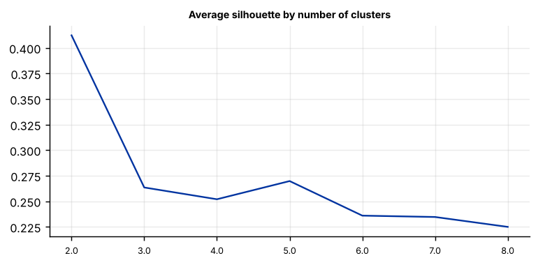
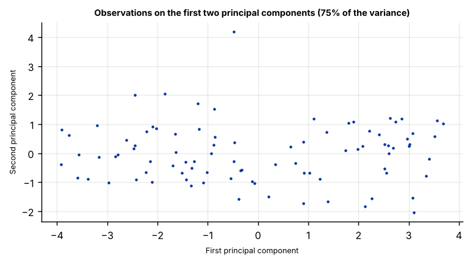

Run this model on your own data in Open Econometric Systems →
Step 1The question and the measures
Is there group structure in these variables, and how many groups? The variables are first standardised (mean 0, variance 1) so that each counts equally. Three methods:
- k-means minimises the within-cluster sum of squares \(\sum_c\sum_{i\in c}\lVert z_i-\bar z_c\rVert^2\) for a given \(k\); clusters are compact and roughly spherical.
- Ward hierarchical clustering merges, at each step, the two clusters whose union increases the within-cluster sum of squares least.
- Gaussian mixture assigns each observation a probability of belonging to each of \(k\) multivariate normal components, and \(k\) can be chosen by the BIC.
The silhouette of observation \(i\) is \((b_i-a_i)/\max(a_i,b_i)\), where \(a_i\) is its average distance to its own cluster and \(b_i\) its average distance to the nearest other cluster. The average is near 1 when clusters are well separated and near 0 when they overlap; Kaufman and Rousseeuw (1990) call values above 0.5 reasonable structure and below 0.25 none. Stability is the average adjusted Rand index (ARI) between the full-sample partition and the partitions found in bootstrap resamples; 1 is perfect agreement and 0 is chance.
Three checks before you report clusters
- Is the structure real? Look at the silhouette and the stability, not at whether the algorithm returns clusters, because it always does.
- Do the variables define the clusters? Redundant variables (life expectancy and child mortality) count twice. State how the result depends on the variable list.
- Do the methods agree? If k-means, Ward and a mixture give different groups, the data do not have a unique partition.
How to write it: the model
We group 90 countries by eight characteristics measured around 1965: log initial GDP per capita, years of schooling, log life expectancy, fertility, the investment share, government consumption, openness and child mortality. The variables are standardised. We run k-means with 2 to 8 clusters and choose the number with the highest average silhouette (Rousseeuw 1987), describe the clusters by their means, and assess stability by refitting on 50 bootstrap samples and computing the adjusted Rand index (Hubert and Arabie 1985) between each bootstrap partition, applied to all countries, and the full-sample partition. We repeat the analysis with Ward hierarchical clustering and a Gaussian mixture.
Step 2Load the data
import numpy as np
import pandas as pd
import oes_engine as oes # pip install -e open-econometric-systems/oes-engine
data = open("growth.csv").read()
df = pd.read_csv("growth.csv")
xs = ["gdpsh465", "human65", "lifee065", "fert65", "invsh41", "govwb1", "freeop", "mort65"]
print(len(df), "countries")
print(df[xs].describe().round(3).T)
print(df[xs].corr().round(2).loc[["gdpsh465", "lifee065", "mort65"]])90 countries
count mean std min 25% 50% 75% max
gdpsh465 90.0 7.703 0.896 5.762 7.132 7.726 8.442 9.230
human65 90.0 4.215 2.530 0.301 2.212 3.804 5.674 11.158
lifee065 90.0 4.102 0.168 3.694 3.994 4.111 4.258 4.317
fert65 90.0 4.742 1.975 1.450 2.845 5.060 6.560 8.000
invsh41 90.0 0.197 0.087 0.027 0.129 0.192 0.255 0.476
govwb1 90.0 0.127 0.046 0.062 0.096 0.121 0.145 0.352
freeop 90.0 0.220 0.075 0.078 0.166 0.204 0.286 0.416
mort65 90.0 0.070 0.047 0.009 0.024 0.064 0.111 0.183
gdpsh465 human65 lifee065 fert65 invsh41 govwb1 freeop mort65
gdpsh465 1.00 0.80 0.89 -0.80 0.52 0.21 0.32 -0.84
lifee065 0.89 0.78 1.00 -0.85 0.54 0.23 0.42 -0.96
mort65 -0.84 -0.80 -0.96 0.86 -0.55 -0.24 -0.43 1.00How to read it
The variables have very different scales (fertility from 1.5 to 8, the investment share from 0.03 to 0.48), which is why they are standardised. Several are strongly correlated: initial GDP and life expectancy correlate 0.89, and life expectancy and child mortality -0.96, so health and income count several times in the distance between countries. The clusters will mostly reflect one dimension, general development, and the guide shows that this is what they do.
Step 3Choose the number of clusters
r = oes.run("cluster", data, dict(x=xs, method="kmeans", k="auto"))
oes.summary(r)
oes.show(r, "Number of clusters")
oes.plot(r, "Average silhouette", ncols=1, size=(6, 3))Observations: 90 Variables: 8 Method: k-means Clusters: 2 Average silhouette: 0.4123 Mean adjusted Rand index (stability): 0.9655 Number of clusters Within-cluster sum of squares Average silhouette Calinski-Harabasz Davies-Bouldin k 2 366.00 0.4123 85.12 0.9421 3 310.75 0.2635 57.29 1.3201 4 268.75 0.2520 48.13 1.3045 5 226.41 0.2698 46.33 1.2791 6 203.20 0.2359 42.73 1.2600 7 187.08 0.2346 39.41 1.0951 8 173.04 0.2249 37.03 1.2184 Note: Silhouette near 1 means well-separated clusters, near 0 means overlapping ones. Higher Calinski-Harabasz and lower Davies-Bouldin are better. k = 2 was chosen by silhouette.

How to read it
The silhouette is highest with two clusters (0.41) and falls to 0.26 with three and 0.24 to 0.27 for four to six. The Calinski-Harabasz index agrees (85 for two clusters, 57 for three) and so does the Davies-Bouldin index (0.94 for two, against 1.32 for three). The within-cluster sum of squares falls smoothly from 366 to 173 between two and eight clusters, without a clear elbow. Two clusters is therefore the choice, with a silhouette of 0.41, a moderate value: there is structure, but not sharply separated groups.
Step 4Describe and test the clusters
oes.show(r, "Cluster profiles")
oes.show(r, "Stability")
oes.plot(r, "Observations on the first two", ncols=1, size=(6, 3.4))Cluster profiles (means in the original units), 2 clusters
Size Share (%) gdpsh465 human65 lifee065 fert65 invsh41 govwb1 freeop mort65
Cluster
Cluster 1 50 55.6 7.0852 2.5112 3.9777 6.3224 0.1534 0.1174 0.1928 0.1062
Cluster 2 40 44.4 8.4751 6.3444 4.2575 2.7665 0.2508 0.1382 0.2542 0.0259
All 90 100.0 7.7029 4.2149 4.1020 4.7420 0.1967 0.1267 0.2201 0.0705
Note: Clusters are numbered by size. Compare each column with the 'All' row to see what defines a cluster.
Stability of the partition (bootstrap)
Value
Statistic
Mean adjusted Rand index against the full-sample partition 0.9655
10th percentile 0.9556
Resamples 50.0000
Note: 1 means the same partition in every resample; values below about 0.6 mean that the clusters are not reproducible and should not be interpreted.
How to read it
The larger cluster has 50 countries (56%) with log initial GDP of 7.1 (against 8.5), 2.5 years of schooling (6.3), fertility of 6.3 (2.8), an investment share of 15% (25%) and child mortality of 0.106 (0.026). The 40 countries of the second cluster are the richer, more educated, lower-fertility group. The two clusters differ on every variable, including openness (0.19 against 0.25) and government consumption (0.117 against 0.138), but most of the distance is on the development variables. The partition is very stable: the average adjusted Rand index against the full-sample partition is 0.97 and its 10th percentile is 0.96, so bootstrap resamples reproduce the same two groups. The scatter of the first two principal components (75% of the variance) shows two overlapping groups along the first component, with a thin region between them but not an empty gap, which agrees with the moderate silhouette.
Step 5Do the methods and the number of clusters agree?
rows = []
for method in ("kmeans", "ward", "gmm"):
for k in ("auto", 3):
rr = oes.run("cluster", data, dict(x=xs, method=method, k=k))
s = {a["label"]: a["value"] for a in rr["summary"]}
rows.append([method, k, s["Clusters"], s["Average silhouette"], s["Mean adjusted Rand index (stability)"], [b[1] for b in rr["tables"][1]["rows"][:-1]]])
print(pd.DataFrame(rows, columns=["method", "k asked", "clusters", "silhouette", "stability", "sizes"]).to_string(index=False))method k asked clusters silhouette stability sizes kmeans auto 2 0.4123 0.9655 [50, 40] kmeans 3 3 0.2635 0.6139 [36, 31, 23] ward auto 2 0.3682 0.6684 [52, 38] ward 3 3 0.2158 0.5829 [38, 30, 22] gmm auto 4 0.2400 0.5307 [32, 29, 21, 8] gmm 3 3 0.3363 0.6295 [43, 39, 8]
How to read it
k-means and Ward both choose two clusters (sizes 50 and 40 against 52 and 38), but the Ward partition is less stable (0.67 against 0.97). The Gaussian mixture chooses four components by BIC, with a silhouette of 0.24 and a stability of 0.53: its four groups are not reproducible. Forcing three clusters lowers the silhouette to 0.22 to 0.34 and the stability to 0.58 to 0.63 in all three methods. A reader should be told that two groups (richer and poorer) are supported by the data and that finer typologies are not. A finer partition could be described, but it would not be a finding.
Step 6Dependence on the variable list
for name, cols in {"without health variables": ["gdpsh465", "human65", "fert65", "invsh41", "govwb1", "freeop"], "development variables only": ["gdpsh465", "human65", "lifee065", "fert65", "mort65"]}.items():
rr = oes.run("cluster", data, dict(x=cols, method="kmeans"))
s = {a["label"]: a["value"] for a in rr["summary"]}
print(name, "| clusters:", s["Clusters"], "| silhouette:", s["Average silhouette"], "| stability:", s["Mean adjusted Rand index (stability)"], "| sizes:", [b[1] for b in rr["tables"][1]["rows"][:-1]])without health variables | clusters: 2 | silhouette: 0.3787 | stability: 0.9331 | sizes: [50, 40] development variables only | clusters: 2 | silhouette: 0.5482 | stability: 0.9148 | sizes: [47, 43]
How to read it
Without the two health variables the number of clusters is still two, with sizes 50 and 40, a silhouette of 0.38 and a stability of 0.93. With only the five development variables the clusters are 47 and 43 countries and the silhouette rises to 0.55, because the variables that remain are strongly correlated and one dimension dominates. The result is robust to the list, as long as the list is about development. A list of different kinds of variables (for example institutions and trade) would produce a different partition and needs its own check.
Step 7Write the results
How to write it: results
The 90 countries fall into two groups. The silhouette is highest for two clusters (0.41, against 0.26 for three), and the same two groups appear in 97% of bootstrap resamples (adjusted Rand index 0.97). The larger group (50 countries) has lower income (log GDP 7.1 against 8.5), schooling (2.5 against 6.3 years), investment (15% against 25%) and openness, and higher fertility (6.3 against 2.8) and child mortality (0.106 against 0.026). The silhouette of 0.41 and the principal-component plot show two overlapping groups, not separated ones. Ward clustering gives similar groups (52 and 38 countries) with lower stability, a Gaussian mixture selects four components that are not stable (adjusted Rand index 0.53), and requiring three clusters produces partitions that are not reproducible (0.58 to 0.63). We therefore report a two-group typology and do not interpret finer partitions.
| Report | What | Where |
|---|---|---|
| Measures | Silhouette, adjusted Rand index | Step 1 |
| Data | Scales and redundant variables | Step 2 |
| Number | Silhouette, Calinski-Harabasz, Davies-Bouldin | Step 3 |
| Profiles | Means by cluster, stability, scatter | Step 4 |
| Methods | k-means, Ward, mixture; k = 3 | Step 5 |
| Variables | Dependence on the variable list | Step 6 |
References. MacQueen, J. (1967), "Some Methods for Classification and Analysis of Multivariate Observations," Proceedings of the Fifth Berkeley Symposium. Ward, J. (1963), "Hierarchical Grouping to Optimize an Objective Function," Journal of the American Statistical Association 58. Rousseeuw, P. (1987), "Silhouettes: A Graphical Aid to the Interpretation and Validation of Cluster Analysis," Journal of Computational and Applied Mathematics 20. Hubert, L. and Arabie, P. (1985), "Comparing Partitions," Journal of Classification 2. Kaufman, L. and Rousseeuw, P. (1990), Finding Groups in Data, Wiley. Fraley, C. and Raftery, A. (2002), "Model-Based Clustering, Discriminant Analysis, and Density Estimation," Journal of the American Statistical Association 97.